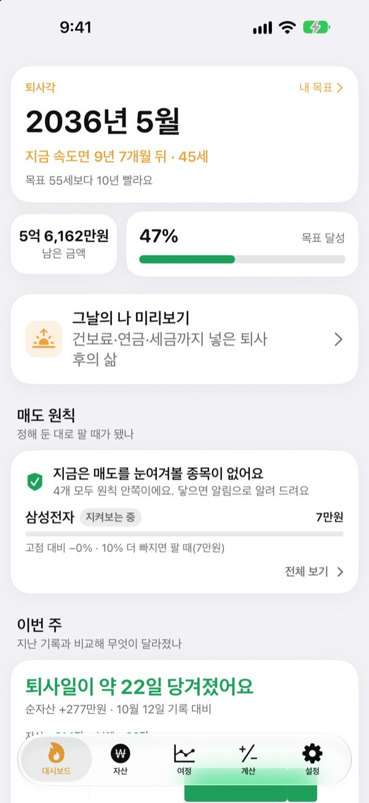
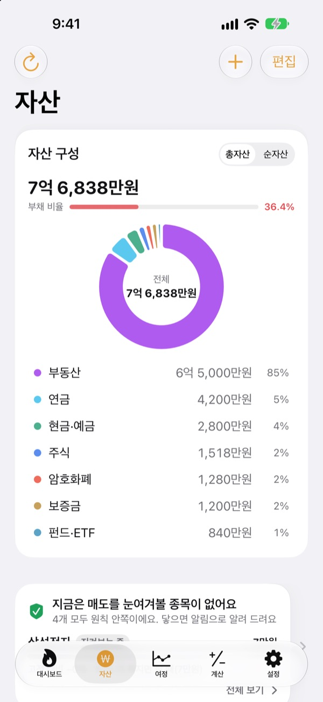
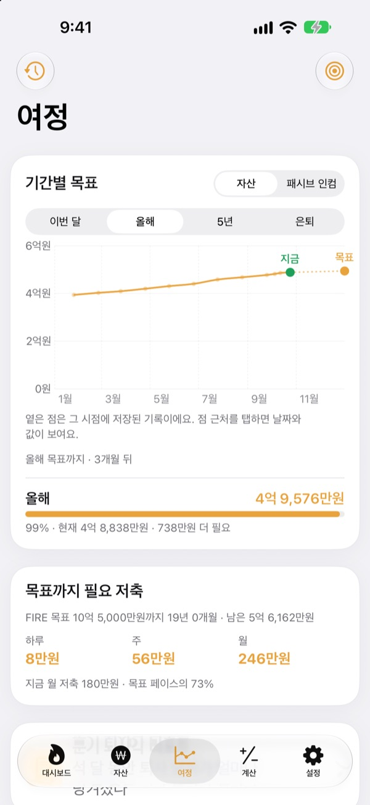
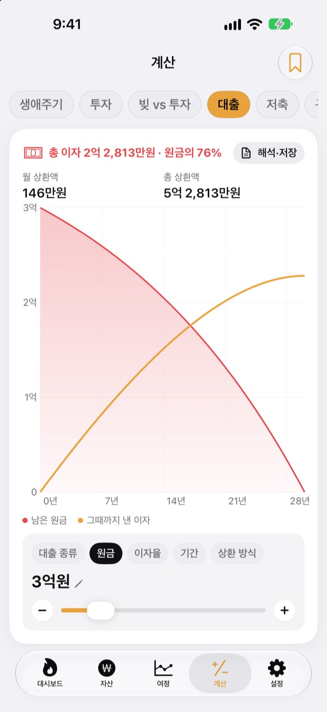

언제 그만둘 수 있는지
감 말고 숫자로
생활비와 모은 돈만 적으면 퇴사할 수 있는 달이 나와요. 자산이 바뀔 때마다 그 날짜가 당겨지는지 밀리는지 바로 보여요.
계정 없이 시작해요. 기록은 이 기기에 저장돼요.

내 퇴사일 계산해 보기
막대를 밀어 보세요. 앱의 첫 화면과 같은 방식으로 바로 계산해요.
"이제 그만둬도 되나?" 매번 계산기를 다시 두드리나요?
통장, 증권 앱, 연금, 전세 보증금이 다 따로 있으면 내가 얼마를 가졌는지부터 흐려져요. 그러니 언제 그만둘 수 있는지는 늘 감으로 남아요. 퇴사각은 흩어진 자산을 한 화면에 모으고, 그 합계로 퇴사할 수 있는 달을 계속 다시 계산해요.
흩어진 자산이 한 화면에
부동산, 주식, 펀드와 ETF, 연금, 현금과 예금, 보증금, 암호화폐, 대출까지 종류별로 모아 총자산과 순자산, 부채 비율을 보여 줘요.
국내·미국 주식과 코인은 시세를 불러와 평가액을 고쳐 주고, 증권사 앱 화면을 캡처하면 종목과 평가액을 한 번에 가져와요.

목표까지 하루에 얼마인지
이번 달, 올해, 5년, 은퇴까지 기간별 목표와 지나온 기록을 그래프 한 장에서 봐요. 목표에 닿으려면 하루, 한 주, 한 달에 얼마를 모아야 하는지도 알려 줘요.
자산이 바뀌면 그 주의 기록이 저절로 남아서, 따로 정리하지 않아도 추이가 쌓여요.

큰 결정은 계산해 보고
생애주기, 투자, 빚 갚기와 투자 비교, 대출, 예금과 적금, 월급의 구매력, 돈을 시간으로 바꿔 보는 계산기가 들어 있어요. 값을 밀면 그래프가 바로 바뀌고, 바꾸기 전 곡선이 점선으로 남아 비교가 쉬워요.
자주 보는 조건은 이름을 붙여 저장해 두고 다시 불러올 수 있어요.

시작은 세 단계면 돼요
- 1
생활비와 나이를 적어요
대략적인 숫자면 충분해요. 바로 내 퇴사일이 나와요.
- 2
자산을 하나씩 적어요
종류별로 나눠 적을수록 날짜가 정확해져요.
- 3
가끔 열어 확인해요
매주 기록이 저절로 쌓이고, 원하면 매달 1일에 알려 줘요.
앱이 계산하는 방식
- 목표 금액
- 은퇴 후 한 해 생활비 ÷ 안전 인출률 (4%면 생활비의 25년 치)
- 퇴사 시점
- 지금 순자산에 매달 모으는 돈을 더하고 예상 수익률로 불려, 목표에 닿는 달
- 총자산
- 가진 자산을 모두 더한 값
- 순자산
- 총자산에서 대출 같은 부채를 뺀 값
- 달성률
- 순자산 ÷ 목표 금액. 패시브 인컴 기준으로도 볼 수 있어요
- 바꿀 수 있는 값
- 한 달 생활비, 안전 인출률 2~6%, 예상 연 수익률 0~12%, 그만두고 싶은 나이
모든 결과는 입력한 값을 바탕으로 한 참고용 계산이며 투자 권유가 아니에요.
자주 묻는 질문
내 자산 기록은 어디에 저장되나요?
이 기기 안에만 저장돼요. 회원가입이 없고, 개발자에게 보내지 않아요. 설정에서 iCloud 동기화를 켜면 내 iCloud 계정으로 아이폰과 아이패드에 같은 기록이 보여요.
시세가 자동으로 안 불러와져요.
국내·미국 주식, 암호화폐, 환율은 아무것도 넣지 않아도 시세를 불러와요. 아파트 시세는 설정에 공공데이터포털 서비스키(아파트 매매 실거래가, 무료)를 넣어야 해요. 인터넷 연결과 종목코드나 티커가 맞는지도 확인해 주세요.
총자산과 순자산은 뭐가 다른가요?
총자산은 가진 자산을 모두 더한 값이고, 순자산은 거기서 대출 같은 부채를 뺀 값이에요. 퇴사 시점은 순자산으로 계산해요.
기기를 바꾸면 기록은 어떻게 옮기나요?
설정의 내보내기로 백업 파일을 만들어 파일 앱, iCloud Drive, 메일에 저장해 두고 새 기기에서 복원하면 돼요. 백업 파일에는 API 키가 들어가지 않아요. 앱은 켜질 때마다 최근 백업 20개를 기기에 자동으로 보관해요.
매도 원칙 알림은 어떻게 동작하나요?
종목마다 고점에서 얼마나 빠지면 팔지, 목표가가 얼마인지 정해 두면 그 선에 닿았을 때 알려 줘요. 오를 때는 알리지 않아요. 앱을 열 때와, 앱이 쉬는 동안 iOS가 허락할 때(보통 몇 시간 간격) 시세를 확인해서 실시간 감시는 아니에요.
숫자를 남이 보지 않게 할 수 있나요?
설정에서 앱 잠금을 켜면 Face ID나 암호로 열어요. 잠금을 켜 두면 매달 오는 알림에도 숫자를 보여 주지 않아요.
먼저 둘러보고 싶어요.
설정의 데모 데이터를 켜면 가상 인물의 자산으로 모든 화면을 미리 볼 수 있어요. 끄면 내 기록으로 그대로 돌아와요. iCloud 동기화 중에는 데모 데이터를 켤 수 없어요.
데이터를 모두 지우려면요?
앱을 지우면 기기에 저장된 모든 기록이 함께 지워져요. 지우기 전에 남겨 두고 싶다면 설정의 내보내기로 백업 파일을 먼저 만들어 두세요.
이 계산을 믿고 투자해도 되나요?
퇴사각의 계산은 입력한 값과 가정한 수익률을 바탕으로 한 참고용 결과예요. 투자 권유가 아니고, 실제 결과는 시장과 상황에 따라 달라요.
버그 제보, 기능 제안, 궁금한 점은 leeo@kakao.com로 보내 주세요.